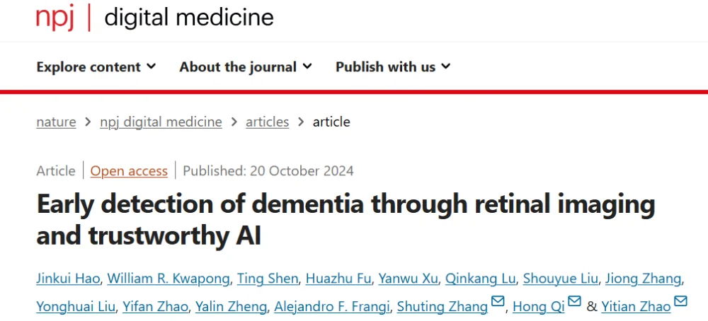
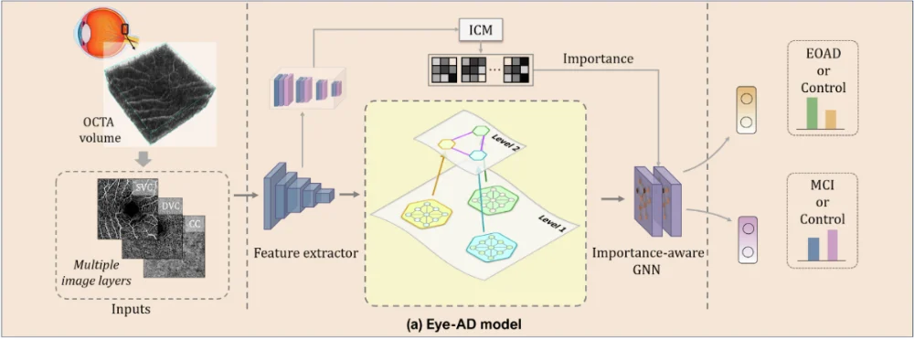
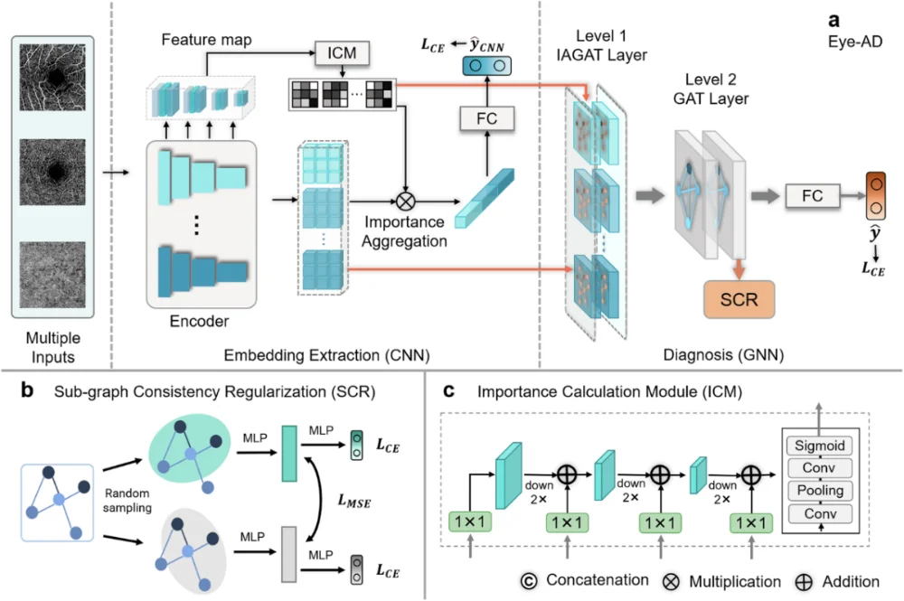
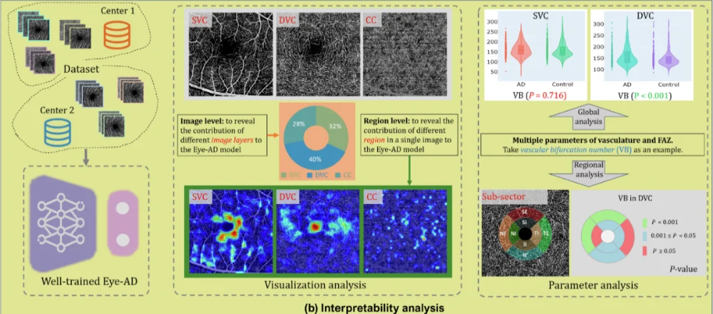

2024年10月，智能医学影像实验室（iMED）团队的最新研究成果《Early detection of dementia through retinal imaging and trustworthy AI》被Nature旗下期刊《npj Digital Medicine》（IF=15.2,中科院1区）接收。iMED团队博士研究生郝晋奎为第一作者。该项研究提出了一种基于图表示学习的深度学习框架 Eye-AD，利用眼底 OCTA图像进行早发性阿尔茨海默病（EOAD）和轻度认知障碍（MCI）的检测，为痴呆症的大规模人口筛查提供了新的方向。此外，该研究结合传统的参数统计分析方法，对模型进行了一系列可解释性分析，旨在理解和揭示模型的决策过程和决策机制，提高了算法在临床上的可信度。

视网膜成像：打开大脑新窗口
痴呆症包括阿尔茨海默病（AD）作为一种全球性健康挑战，早期检测手段仍然有限。传统的诊断如磁共振成像（MRI）和脑脊液分析（CSF），成本高，耗时且具有侵入性，不适合大规模筛查。近年来，视网膜被认为是大脑的“窗口”，已经有多项临床研究证据表明AD患者的视网膜微血管结构发生显著变化。眼底OCTA作为一种新型的非侵入性成像技术，能够对视网膜的微血管结构进行快速高分辨率成像。然而，现有方法大多基于CFP模态，在提取和分析视网膜多层次微血管特征方面存在局限，且大多数模型缺乏可解释性。因此，亟需一种高效、基于OCTA模态，且可解释的AI方法来准确检测早期痴呆。
Eye-AD模型概览
本研究提出了一种具有可解释性的深度学习模型Eye-AD。模型主要包含两部分，用于图像的嵌入特征提取的卷积神经网络（CNN）以及用于实现最终预测的多层图神经网络（GNN）。
其中创新性地为OCTA图像构建了一个多层次的图结构，包括实例级图和个体级图。这一多层次图结构使模型能够捕捉每个视网膜层中的局部特征，同时挖掘不同视网膜层之间的全局关联。
- 实例级图用于表示每个en face图像中不同区域的连接关系。
- 主体级图则表示OCTA图像不同层次（浅层血管复合体SVC、深层血管复合体DVC和脉络毛细血管CC）的相互关系。
此外，模型还引入了重要性计算模块（ICM）和子图一致性正则化（SCR），前者对图像中每个区域的预测贡献进行加权，增强了模型对关键特征区域的敏感性；后者主要是在模型训练过程从同一主体级图中随机采样两个子图，并通过最小化它们的特征距离，增强模型的泛化能力和避免过拟合，尤其对小规模数据集十分有效。


结论与“黑箱揭秘”
本项研究采用了来自四个中心的病例对照研究数据。研究通过五折交叉验证和外部数据集评估了模型的泛化能力，在EOAD检测上，模型在内外部数据集上均表现优异，AUC 值分别为 0.9355 和 0.9007。模型在 MCI 检测上也表现出色，在内外部数据集上AUC 值分别为 0.8630和 0.8037。对比现有其他方法，Eye-AD都取得了最佳性能，显著提升了检测精度，也验证了其在不同中心数据和不同任务下的鲁棒性。
研究还对Eye-AD的决策机制进行了可解释性分析，展示了模型在在决策过程中关注的关键区域。分析结果表明，DVC层对模型预测的贡献最大，尤其是在黄斑中心凹无血管区（FAZ）及其周围微血管区域中。此外，研究提取八个视网膜微血管和FAZ参数进一步分析，结果显示 DVC 层的参数差异尤为显著，这也表明常规的参数统计分析和Eye-AD模型的可解释性分析结果一致，增强了Eye-AD的可信度，同时也反映了DVC 在痴呆症的检测中起着更重要的作用。此外还有一个显著的差异是 EOAD 在 SVC 和 DVC 两个层面上表现出比 MCI 更大的组间差异。这意味着 EOAD 组对眼底结构的改变比 MCI 组更为显著。

结语：视网膜成像+AI，推动早期痴呆筛查的未来
通过 Eye-AD 模型，该研究展示了视网膜成像结合人工智能在AD和MCI早期检测中的巨大潜力。相比传统的检测方法，OCTA 成像不仅无创、快速，而且成本较低，适合大规模筛查。未来，随着多模态数据的结合，如血液生物标志物和认知测试，Eye-AD 有望进一步提升检测的准确性，成为社区筛查和早期诊断的重要工具。
作者专栏
郝晋奎，中国科学院宁波材料所2024届博士研究生。博士期间获得院长和所长奖学金，发表多篇高水平论文，涵盖了医学影像领域的顶级期刊和会议，包括《IEEE Transactions on Medical Imaging》和《Medical Image Analysis》,以及全球知名的医学影像会议MICCAI，对相关领域的发展做出了重要的贡献。目前，郝晋奎博士在美国西北大学担任博士后研究员，继续他的学术生涯，也祝愿其在科研道路一路生花，开创属于自己的科研天地。
文章链接：
代码链接：
https://github.com/iMED-Lab/Eye-AD